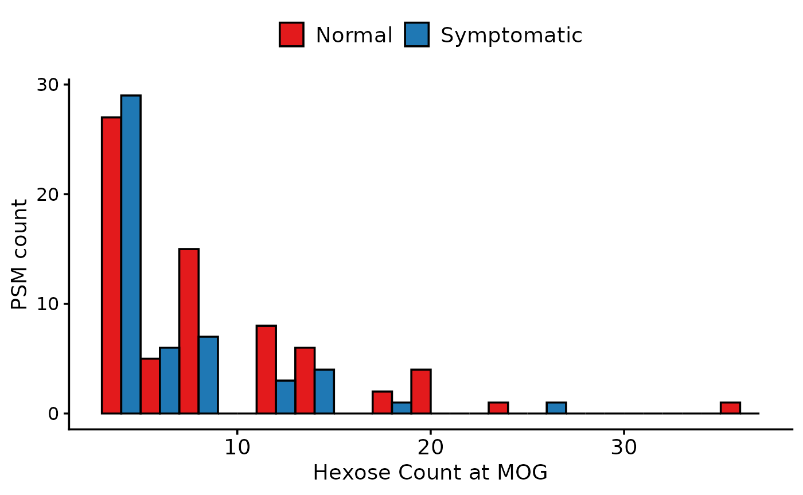
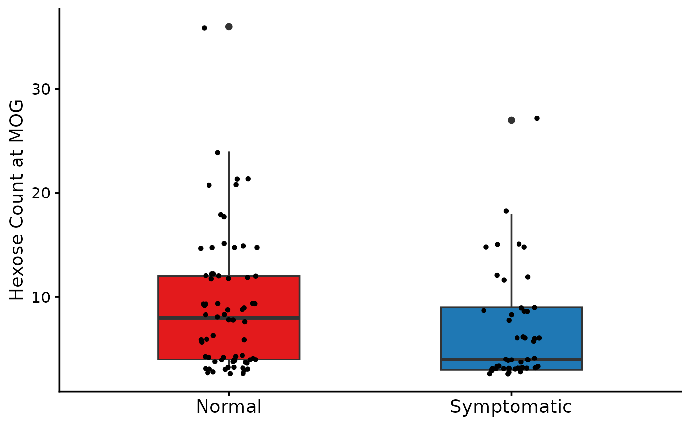
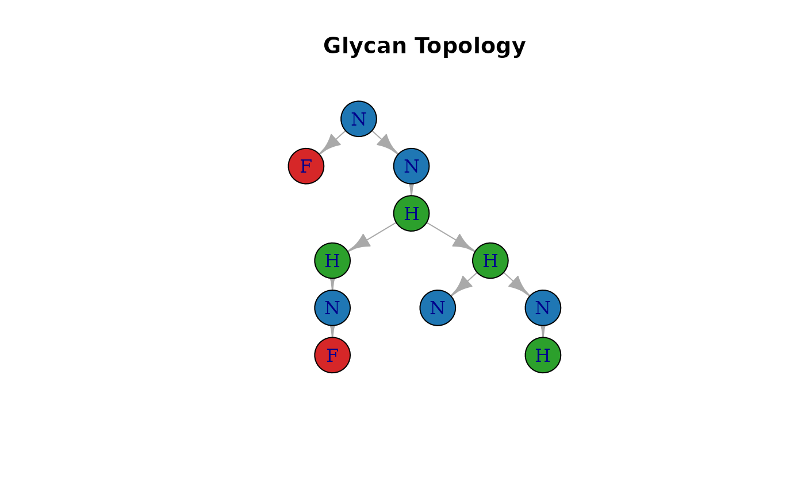
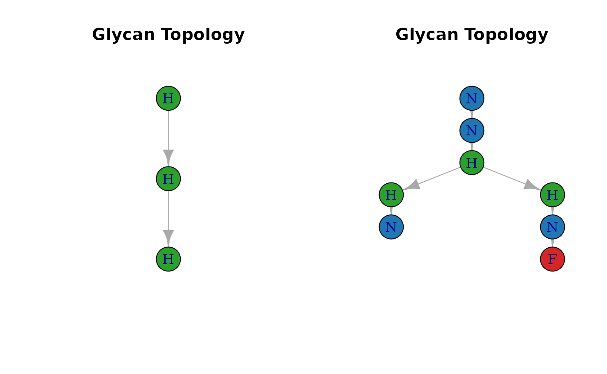
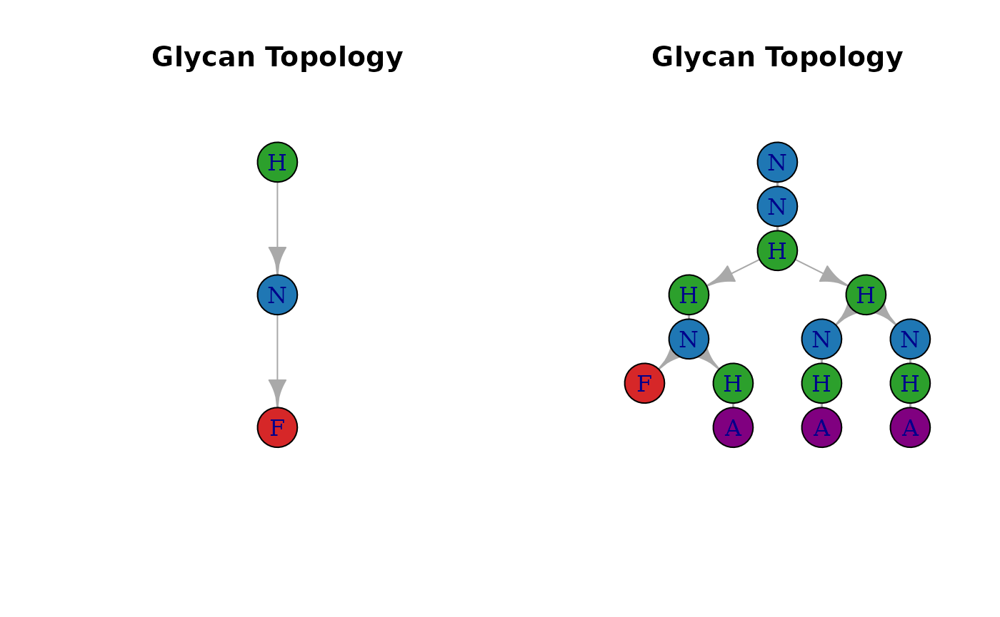

Abstract
glycoTraitR provides a streamlined workflow for extracting, summarizing, and analyzing glycan structural traits from glycoproteomics GPSM data generated by pGlyco3 or Glyco-Decipher. The package represents glycan traits using SummarizedExperiment data structures, enabling seamless downstream statistical analysis and visualization.
glycoTraitR is designed to provide users a streamlined workflow for
extracting, summarizing, and analyzing glycan structural traits from
GPSM data generated by pGlyco3 or
Glyco-Decipher. Building on the Bioconductor core data
infrastructure by representing glycan trait data using the
SummarizedExperiment class, enabling interoperability with
downstream Bioconductor analysis tools, including packages such as
limma and related differential analysis frameworks.
Rather than focusing on individual glycoforms, glycoTraitR converts glycan structures into biologically interpretable composition- and structure-based traits, and summarizes these traits at the glycopeptide (site) or protein level.
In this quick start guide, we demonstrate how to:
SummarizedExperiment)The glycoTraitR package can be installed using BiocManager.
if (!require("BiocManager", quietly = TRUE)) {
install.packages("BiocManager")
}
BiocManager::install("matsui-lab/glycoTraitR")After installation, we load the package into the current R session. All functions used in the following examples are provided by glycoTraitR.
In this quick start tutorial, we walk through a typical
glycoTraitR analysis workflow using example GPSM data generated
by pGlyco3.
The goal is to demonstrate how glycan structures can be transformed into
biologically interpretable traits, summarized at the protein/site level,
and analyzed by statistical comparison between groups.
We begin by loading example GPSM data and accompanying sample
metadata.
For reproducibility and convenience, this vignette uses a small toy
dataset bundled with the package. The commented code above shows how
users can instead download and analyze the full public dataset hosted on
Zenodo.
# The following is an example file from Zenodo
# url <- "https://zenodo.org/records/17756830/files/pGlycoDB-GP-FDR-Pro-Quant-Site.txt?download=1"
# download.file(url, "pGlyco3_GPSM.txt", mode = "wb")
# gpsm <- read_pGlyco3_gpsm("pGlyco3_GPSM.txt")
# meta_url <- "https://zenodo.org/records/17759790/files/meta_mcp_2022_100433.rds?download=1"
# download.file(meta_url, "meta_example.rds", mode = "wb")
# meta <- readRDS("meta_example.rds")
# The following is a smaller toy example files from package
path <- system.file("extdata", "pGlyco3_gpsm_toyexample.txt", package = "glycoTraitR")
gpsm_toyexample <- read_pGlyco3_gpsm(path)
data("meta_toyexample")
head(gpsm_toyexample)## Protein Peptide GlycanStructure
## 1 PGCA TVYVHAJQTGYPDPSSR (N(F)(N(H(H(N(F)))(H(N)(N(H))))))
## 2 CNTN1 GKAJSTGTLVITDPTR (N(F)(N(H(H(N(H)))(H(N(F))))))
## 3 MOG JATGMEVGWYRPPFSR (N(F)(N(H(H(N(H)))(H(N(F))))))
## 4 MOG JATGMEVGWYRPPFSR (N(F)(N(H(H(N))(H(N)))))
## 5 MOG JATGMEVGWYRPPFSR (N(F)(N(H(H)(H))))
## 6 MOG JATGMEVGWYRPPFSR (N(F)(N(H(H)(N)(H(N(H)(F))))))
## File Count
## 1 KS_AD1_HILIC-elu_870_3584 1
## 2 KS_AD1_HILIC-elu_870_3584 1
## 3 KS_AD1_HILIC-elu_870_3584 1
## 4 KS_AD1_HILIC-elu_870_3584 6
## 5 KS_AD1_HILIC-elu_870_3584 1
## 6 KS_AD1_HILIC-elu_870_3584 1
head(meta_toyexample)## # A tibble: 6 × 3
## Diagnosis `Sample number` file
## <fct> <dbl> <chr>
## 1 Asymptomatic 1 KS_AD1_HILIC-elu_870_3584
## 2 Normal 110 KS_AD110_HILIC-elu_875_3594
## 3 Normal 118 KS_AD118_HILIC-elu_851_3546
## 4 Normal 12 KS_AD12_HILIC-elu_867_3578
## 5 Normal 125 KS_AD125_HILIC-elu_845_3534
## 6 Normal 127 KS_AD127_HILIC-elu_873_3590The gpsm_toyexample object contains
glycopeptide-spectrum matches, including glycan structures encoded in
pGlyco3 format.
The meta_toyexample object provides sample-level
annotations that will later be used to define experimental groups.
Next, we convert GPSM-level glycan information into glycan trait
matrices.
This step parses glycan structures, computes composition and structural
traits, and summarizes the resulting values at the protein
level using a SummarizedExperiment object.
trait_se <- build_trait_se(
gpsm_toyexample,
from = "pGlyco3",
motifs = NULL,
level = "protein",
meta = meta_toyexample
)## adding traits to the gpsm matrix## Warning: The `father` argument of `bfs()` is deprecated as of igraph 2.2.0.
## ℹ Please use the `parent` argument instead.
## ℹ The deprecated feature was likely used in the glycoTraitR package.
## Please report the issue at
## <https://github.com/matsui-lab/glycoTraitR/issues>.
## This warning is displayed once every 8 hours.
## Call `lifecycle::last_lifecycle_warnings()` to see where this warning was
## generated.## generating protein trait matrices
trait_se## class: SummarizedExperiment
## dim: 6 1311
## metadata(0):
## assays(13): GlycanSize Hexose ... CoreFuc AntFuc
## rownames(6): PGCA CNTN1 ... DPP6 ITB8
## rowData names(1): level
## colnames(1311): psm1 psm2 ... psm1310 psm1311
## colData names(4): Diagnosis Sample number file psm_idThe resulting trait_se object stores one assay matrix
per glycan trait.
Rows correspond to proteins, columns correspond to GPSMs, and values
represent trait-specific glycan abundances.
We now perform differential analysis to identify glycan traits that
differ significantly between experimental groups.
As an example, we compare samples labeled as Normal and
Symptomatic based on the Diagnosis column in the
sample metadata.
changed_traits <- analyze_trait_changes(
trait_se = trait_se,
group_col = "Diagnosis",
group_levels = c("Normal", "Symptomatic"),
min_psm = 20
)
head(changed_traits)## trait level l_pval f_val t_pval t_val
## t GlycanSize CNTN1 0.03309985 4.570347 0.03318245 2.136934
## t1 GlycanSize MOG 0.07219982 3.291038 0.02897848 2.210923
## t2 GlycanSize ITB8 0.01750819 5.994530 0.08711770 -1.793639
## t3 Hexose MOG 0.09384406 2.853005 0.01962574 2.365832
## t4 Hexose ITB8 0.01964245 5.770116 0.09411908 -1.749760
## t5 HexNAc CNTN1 0.04575081 4.014279 0.02068097 2.322456The output table reports glycan traits and corresponding proteins for
which either the Welch t-test or Levene’s variance test is significant
(p < 0.05).
Each row represents a specific trait–protein combination showing
evidence of differential behavior between the two groups.
We can visualize its distribution at the GPSM level.
Here, we select the Hexose trait for the protein MOG
as an example.
p <- plot_trait_distribution(
trait_se = trait_se,
group_col = "Diagnosis",
group_levels = c("Normal", "Symptomatic"),
trait_name = "Hexose",
feature = "MOG"
)
p$p_hist
p$p_box
The histogram shows the distribution of GPSM-level trait abundances across groups, while the boxplot summarizes group-wise differences and variability.In addition to pre-defined glycan traits, glycoTraitR allows users to define custom glycan motifs of biological interest. Next we demonstrate how to define the glycan motifs of users’ own interests. We show how glycoTraitR detects these motif occurrences within glycan structures.
We will:
We first parse glycan structures into tree representations.
Internally, glycans are represented as graphs, where nodes correspond to
monosaccharides and edges represent glycosidic linkages.
# Example: parsed glycan trees from existing GPSM data
path <- system.file("extdata", "pGlyco3_gpsm_toyexample.txt", package = "glycoTraitR")
gpsm_toyexample <- read_pGlyco3_gpsm(path)
data("meta_toyexample")
glycans <- lapply(gpsm_toyexample$GlycanStructure, glycoTraitR:::pGlyco3_to_tree)We use the function build_glycan_igraph() to visualize
an example of glycan structure.
# visualize example structures
igraph_obj <- build_glycan_igraph(glycans[[1]])
plot_glycan_tree(igraph_obj)
This visualization highlights the branching structure and residue composition of a glycan, which is essential for understanding motif topology.
This example demonstrates how to define and detect a simple glycan motif consisting of three hexose (H) residues connected in series.
Here we define a linear trisaccharide motif:
"a-b", "b-c"
#### Example 1 ####
# (1) Select a glycan from pGlyco3 data
tree_full <- glycans[[24]]
g_full <- build_glycan_igraph(tree_full)
# (2) Define motif manually
motif <- list(
node = c("H", "H", "H"),
edge = c("a-b", "b-c")
)
g_motif <- build_glycan_igraph(motif)
# (3) Perform subgraph matching
n_match <- count_subgraph_isomorphisms(
g_motif, g_full,
method = "vf2",
vertex.color1 = factor(V(g_full)$type),
vertex.color2 = factor(V(g_motif)$type)
)
# (4) Visualize
par(mfrow = c(1, 2))
plot_glycan_tree(g_motif)
plot_glycan_tree(g_full)
## [1] "0 motif(s) found in the glycan"The reported match count indicates how many times the specified motif occurs within the full glycan structure.
More complex motifs can also be defined, including branched structures and specific monosaccharide types such as fucose (F).
This example defines a branched motif containing Fucose:
#### Example 2 ####
# (1) Select a glycan
tree_full <- glycans[[1]]
g_full <- glycoTraitR::build_glycan_igraph(tree_full)
# (2) Symbolic motif definition
motif <- list(
node = c("H", "N", "F"),
edge = c("a-b", "b-c")
)
g_motif <- glycoTraitR::build_glycan_igraph(motif)
# (3) Subgraph matching
n_match <- igraph::count_subgraph_isomorphisms(
g_motif, g_full,
method = "vf2",
vertex.color1 = factor(V(g_full)$type),
vertex.color2 = factor(V(g_motif)$type)
)
# (4) Visualize motif vs. full glycan
par(mfrow = c(1, 2))
plot_glycan_tree(g_motif)
plot_glycan_tree(g_full)
## [1] "1 motif(s) found in the glycan"Multiple user-defined motifs can be supplied simultaneously.
Once defined, these motifs are treated as additional glycan traits and
are incorporated into the trait computation workflow.
user_motifs <- list(
LinearH3 = list(
node = c("H", "H", "H"),
edge = c("a-b", "b-c")
),
FucBranch = list(
node = c("H", "N", "F"),
edge = c("a-b", "b-c")
)
)Each user-defined motif appears as a separate assay in the
SummarizedExperiment, allowing it to be analyzed together
by build_trait_se() as other built-in glycan traits.
trait_se <- build_trait_se(
gpsm_toyexample,
from = "pGlyco3",
motifs = user_motifs,
level = "protein",
meta = meta_toyexample
)## adding traits to the gpsm matrix## generating protein trait matrices
SummarizedExperiment::assayNames(trait_se)## [1] "GlycanSize" "Hexose" "HexNAc" "Neu5Ac" "Neu5Gc"
## [6] "Fucose" "Antennas" "Bisect" "Complex" "HighMan"
## [11] "Hybrid" "CoreFuc" "AntFuc" "LinearH3" "FucBranch"Your motif counts will automatically appear as additional glycan traits in the trait matrices.
In this vignette, we provided a step-by-step tutorial demonstrating how glycoTraitR integrates glycoproteomics output into a unified trait-based analysis framework. You can now construct your own biologically meaningful glycan motifs and include them directly in glycoTraitR analyses.
## R version 4.5.2 (2025-10-31)
## Platform: x86_64-pc-linux-gnu
## Running under: Ubuntu 22.04.2 LTS
##
## Matrix products: default
## BLAS: /opt/R/4.5.2/lib/R/lib/libRblas.so
## LAPACK: /usr/lib/x86_64-linux-gnu/lapack/liblapack.so.3.10.0 LAPACK version 3.10.0
##
## locale:
## [1] LC_CTYPE=en_US.UTF-8 LC_NUMERIC=C
## [3] LC_TIME=en_US.UTF-8 LC_COLLATE=en_US.UTF-8
## [5] LC_MONETARY=en_US.UTF-8 LC_MESSAGES=en_US.UTF-8
## [7] LC_PAPER=en_US.UTF-8 LC_NAME=C
## [9] LC_ADDRESS=C LC_TELEPHONE=C
## [11] LC_MEASUREMENT=en_US.UTF-8 LC_IDENTIFICATION=C
##
## time zone: Asia/Tokyo
## tzcode source: system (glibc)
##
## attached base packages:
## [1] stats graphics grDevices utils datasets methods base
##
## other attached packages:
## [1] igraph_2.2.1 glycoTraitR_0.99.2 BiocStyle_2.38.0
##
## loaded via a namespace (and not attached):
## [1] SummarizedExperiment_1.40.0 gtable_0.3.6
## [3] xfun_0.56 bslib_0.9.0
## [5] ggplot2_4.0.0 htmlwidgets_1.6.4
## [7] Biobase_2.70.0 lattice_0.22-7
## [9] vctrs_0.6.5 tools_4.5.2
## [11] generics_0.1.4 stats4_4.5.2
## [13] parallel_4.5.2 tibble_3.3.0
## [15] pkgconfig_2.0.3 Matrix_1.7-4
## [17] RColorBrewer_1.1-3 S7_0.2.0
## [19] desc_1.4.3 S4Vectors_0.48.0
## [21] lifecycle_1.0.4 compiler_4.5.2
## [23] farver_2.1.2 textshaping_1.0.4
## [25] Seqinfo_1.0.0 carData_3.0-5
## [27] htmltools_0.5.8.1 sass_0.4.10
## [29] yaml_2.3.10 Formula_1.2-5
## [31] pkgdown_2.2.0 pillar_1.11.1
## [33] car_3.1-3 crayon_1.5.3
## [35] jquerylib_0.1.4 DelayedArray_0.36.0
## [37] cachem_1.1.0 abind_1.4-8
## [39] tidyselect_1.2.1 digest_0.6.37
## [41] dplyr_1.1.4 bookdown_0.46
## [43] labeling_0.4.3 fastmap_1.2.0
## [45] grid_4.5.2 cli_3.6.5
## [47] SparseArray_1.10.8 magrittr_2.0.4
## [49] S4Arrays_1.10.1 utf8_1.2.6
## [51] withr_3.0.2 scales_1.4.0
## [53] rmarkdown_2.30 XVector_0.50.0
## [55] matrixStats_1.5.0 otel_0.2.0
## [57] ragg_1.5.0 pbapply_1.7-4
## [59] evaluate_1.0.5 knitr_1.51
## [61] GenomicRanges_1.62.1 IRanges_2.44.0
## [63] rlang_1.1.6 glue_1.8.0
## [65] BiocManager_1.30.26 BiocGenerics_0.56.0
## [67] rstudioapi_0.17.1 jsonlite_2.0.0
## [69] R6_2.6.1 MatrixGenerics_1.22.0
## [71] systemfonts_1.3.1 fs_1.6.6